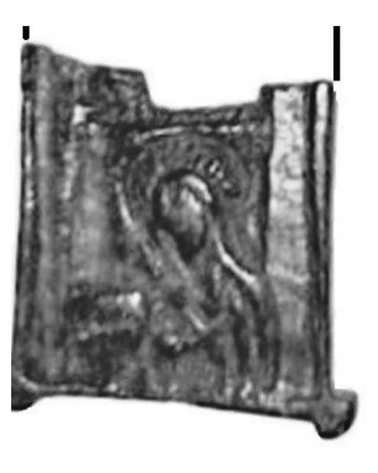

Catalog › CE-0219 · JOS2022-4
Fragment de cruce pectorală cu o sfântă în maphorion, sat Tabăra, com. Icușești
sec. XIII (1201–1300) · sat Tabăra, com. Icușești, jud. Neamț, România · Complexul Muzeal Național Neamț, Piatra Neamț
pectoral cross, bronz; c. XIII (1201–1300); found at sat Tabăra, com. Icușești, jud. Neamț, România; kept at Complexul Muzeal Național Neamț, Piatra Neamț.


Identificare
- Categorie
- Cruce pectorală simplă
- Material
- Bronz
- Tehnică
- Turnare în relief
- Stare
- Fragmentară
Iconografie
- Descriere avers
- Fragment de cruce pectorală cu reprezentarea unei sfinte care poartă maphorion, cu capul aplecat spre stânga. Colțurile de jos ale brațului crucii au câte o prelungire circulară.
- Descriere revers
- Spate plat.
Datare și atribuire
- Datare
- sec. XIII (1201–1300)
- Centru
- Necunoscut
Descoperire
- Localitate
- sat Tabăra, com. Icușești
- Regiune
- jud. Neamț
- Țară
- România
- Context
- Descoperire izolată
- Coordonate
- 46.8205° N, 27.0385° E
- Precizia locului
- Coordonate exacte
Păstrare și referințe
- Colecție
- Complexul Muzeal Național Neamț, Piatra Neamț
- Bibliografie
- V. Josanu, Encolpioane inedite descoperite recent în județul Neamț, în Evul Mediu neterminat / A befejezetlen középkor / The Unfinished Middle Ages. Omagiu adus profesorului Adrian Andrei Rusu la împlinirea vârstei de 70 de ani, ed. G.-D. Iegar, P. L. Szűcs, G. Rusu, F. Vasilescu, Cluj-Napoca, Editura Mega, 2022, p. 707–723 [Josanu 2022], p. 716, reprodusă la Fig. 13 (planșele, p. 723). Bibliografie citată în sursă: Kajl’–Nečitajlo 2006, 58.
- Figura
- Fig. 13
- Planșe
- Josanu 2022, p. 723
- Analogii
- Descoperiri similare din mediul rusesc, datate în sec. XIII (Fig. 14); în 2006 erau cunoscute unul-două exemplare de acest fel (Kajl’–Nečitajlo 2006, 58–59, nr. 511).
- Observații
- Datare după Josanu: sec. XIII (după analogiile rusești). Turnat din bronz. Reconstituirea piesei întregi nu e posibilă. Recoltat pe un teren arabil din centrul satului, lângă ruinele unei biserici vechi cu cimitir; informațiile au fost culese la fața locului în primăvara 2017, la cercetări de suprafață coordonate de prof. Neculai Bolohan. Coordonate: citite din marcajul de pe harta Fig. 15 a sursei (46°49'13,8"N 27°02'18,5"E).
Citare: Corpus Encolpiorum, CE-0219, Fragment de cruce pectorală cu o sfântă în maphorion, sat Tabăra, com. Icușești, --root/piese/JOS2022-4/ (accesat 2026-10-20).